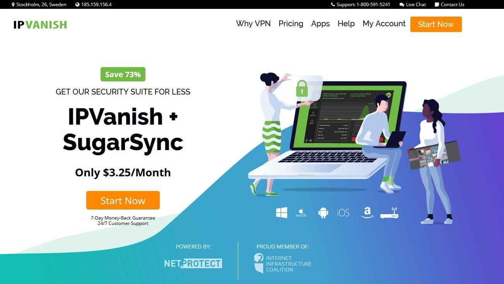

IPVanish Review
8
Good
Our verdict: IPVanish has fast download speeds and secure connections. It provides great value for money through its extensive features, powerful encryption and reliable protection.

Summary Review
First released in 2012, IPVanish has become a standard in the VPN industry mostly for its user-friendly applications and practical features for both mobile and desktops. We don’t usually heap praises when we’re reviewing a VPN service but when it comes to IPVanish, get ready because there’s a lot of heaping to be done. First of all, it’s flawless whatever aspect you look into - performance, customer support, apps, security, speeds, and server network. It also works great for Netflix, torrenting, and Kodi and has a strict no-logs policy as well as an excellent server network across more than 75 locations. If you are in the market for a VPN vendor that will take care of security and privacy for all your devices - be it mobile or desktop, you’ve come to the right place!
Privacy / Anonymity
We checked IPVanish’s privacy page and we like that they are pretty transparent about the type of information they collect. According to them, “IPVanish is a zero-logs VPN service provider, which means that we do not keep a record of any connection, traffic, or activity data in regards to our Services. In general, however, we monitor our Site activity to measure its performance and improve functionality.” IPVanish collects your email address, payment method, and billing address in order to register your subscription, as well as some non-personal information like page requests, browser type, OS, bounce rate, and the average time spent on their site. All of this information is purportedly used for the improvement of their site. This VPN vendor also does not track user activities outside of their site nor do they track user’s website browsing or connection activities.
In terms of protection and security, IPVanish is certainly one of the best. It supports all four major encryption protocols - OpenVPN, L2TP/IPsec, SSTP and PPTP. Utilizing the unbreakable AES-256 cipher, this means that you are protected at all times. Of course, it also has a VPN kill switch feature that prevents data leaks in case your connection drops.
Streaming and Torrenting
Unfortunately, IPVanish won’t work in China as well as other high-censorship countries like North Korea, Iran, Cuba, Myanmar, Saudi Arabia, UAE, and a few more. However, if you intend to use it mostly for torrenting, then you are in very good hands. First of all, torrenting is permitted on all of its servers, in fact, it is consistently rated to be one of the top vendors for P2P activities. Did you know that it is currently the top VPN service for Kodi? Yup, you can always rely on IPVanish for its blazing speeds, strict no-log policy, and IP or DNS leak protection.
On the other hand, if you’re looking for a VPN service in order to bypass Netflix’s draconian geo-restriction practice, you’ll be a tad disappointed. While most of the UK and US servers granted us access to the popular streaming service, it took a while to load. Also, we tried it with BBC iPlayer, Disney+, Hulu, and Amazon Prime but didn’t have much luck there either.
Speed and Reliability
As expected, we were able to do standard browsing without any hitch. IPVanish actually turned out some of the fastest connection speeds during our reviews and tests. It’s common knowledge that the speed usually suffers the moment you connect to a VPN but such is not the case with IPVanish. In fact, it’s fast enough for HD or 4K streaming! For example, our base download speed before connecting to the VPN was 97.48Mbps. Connecting to a server in our location resulted in a speed loss of only 10%, clocking at 84.10Mbps. We also tried connecting to servers in the US, Australia, Singapore, and Germany with very impressive results. We got download speeds of 52Mbps, 24Mbps, 26Mbps, and 75Mbps respectively. All in all, IPVanish showed some of the best downloads, uploads, and latency so it’s a great choice for torrenters and gamers alike.
Platforms and Devices


One thing that sets IPVanish apart from the competition is the fact that they’re probably the only provider to have a Linux application ready. This definitely simplifies the setup of VPN on Linux so it’s great news for those who are technically minded. Aside from that, IPVanish supports major platforms and has custom apps for PCs, Apple Macs, iPhones, and Android devices along with Amazon Kindle, Internet routers, Playstation/Xbox, Amazon Firestick, Roku, and other game consoles and streaming devices. This VPN service also offers browser extensions for Firefox and Chrome. And you know what the best part is? IPVanish allows simultaneous connections up to 10 devices. That’s double what most other VPN providers allow!
Server Locations
IPVanish has a whopping 40,000+ IP addresses and over 1,300 servers worldwide. This is one of the highest numbers of IP addresses we’ve seen so far and this just means you won’t experience congestion or slow speeds while you’re connected to IPVanish. All major countries in every continent are covered including some of the less popular ones like Moldova and the Philippines. In addition, this vendor also provides a city-level granularity which will surely be appreciated by some of the more advanced users.


Customer Service
If you run into some issues, you can easily get in contact with support agents through the Help button integrated on their website. You have the option to either do a live chat or simply leave a message. The Help page list some FAQs as well as setup guides, troubleshooting tutorials, billing questions, and more. You can easily submit an email ticket too!
Pricing
Like most other providers, IPVanish offers three subscription packages. The month-to-month plan costs $10 while a 3-month plan is available for $26.99 billed every 3 months. This lowers down the monthly costs by as much as 25%. As can be expected, you’ll get the most savings (67%) if you pay upfront for their 1-year plan billable at $47.99 or just $3.99 per month. All plans are backed with a 7-day money-back guarantee.
IPVanish User Reviews
- "I would like to say that IPVanish is an excellent VPN service and I would recommend it to anyone who is interested in using a VPN."